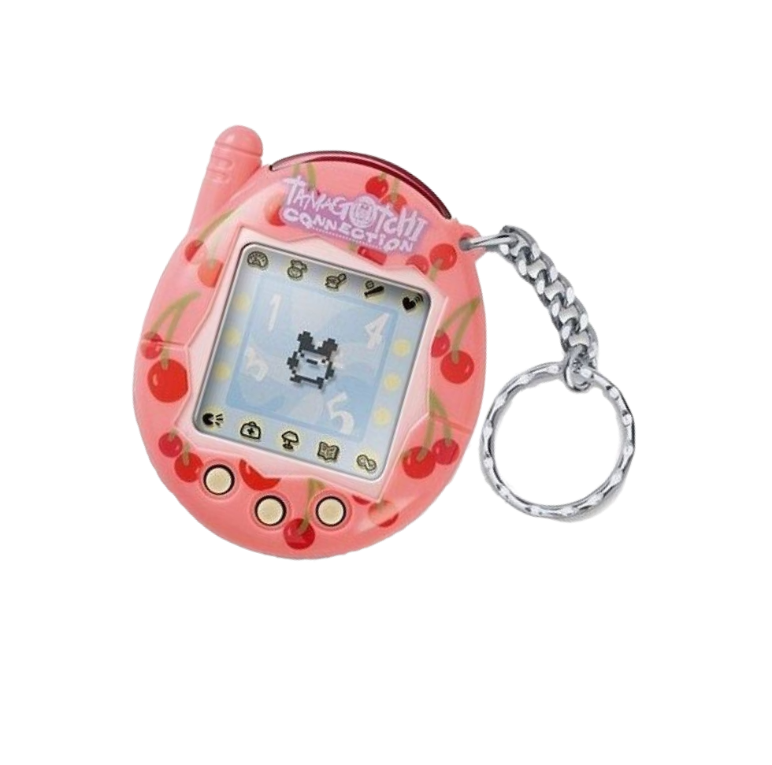
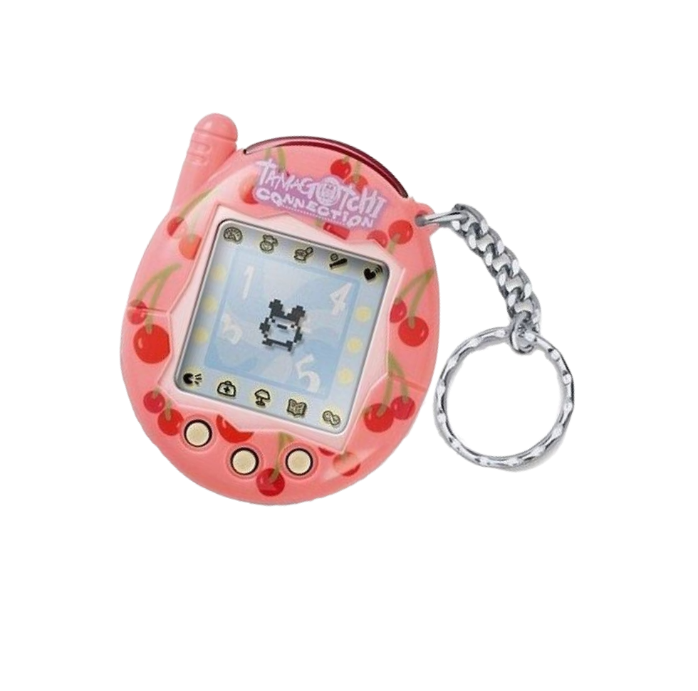

Танцы, клубы и посиделки
во дворе: как проводили
досуг в СССР

 
 
В советское время люди больше общались с друг с другом вживую. И практически весь досуг был построен именно на этом.
Сегодня люди, жившие в СССР, считают, что они проводили свободное время более интересно и насыщенно, чем сейчас. И это при том, что не было никаких электронных гаджетов, ночных клубов, а телевизор показывал всего два канала. Как развлекались советские люди в 70-80-е годы, узнали «НовостиВолгограда.ру».
В теплое время года с наступлением темноты бабушек на лавочках сменяли молодежные компании с гитарами. Обязательно находился товарищ, умевший брать аккорды и знавший не только лирические, но и скабрезные песенки. Остальные слушали и подпевали, тексты переписывали в тетрадки и передавали друг другу.

Советские подростки в 70-х
В советское время люди больше общались с друг с другом вживую. И практически весь досуг был построен именно на этом.

Советские подростки в 70-х


Дискотека в СССР
Танцы в СССР

Танцы в СССР

Советские танцы
Танцы в СССР
Танцы — один главных видов досуга советского человека. На танцплощадки пускали только взрослых. В парке «ВГС» города Волжского билет на одного человека стоил 50 копеек. Скорее всего, такая цена была повсеместно, как это практиковалось в СССР.
Для молодых людей танцы были не только развлечением, но и отличным способом устроить личную жизнь. Хотя парни и девчата приходили группами, все равно потом искали себе пару. При входе все проходили фейс-контроль, и кого-то могли не пустить.
Дискотека
в СССР
Танцы в СССР
Танцы в СССР
Советские
танцы
Танцы в СССР
Танцы — один главных видов досуга советского человека. На танцплощадки пускали только взрослых. В парке «ВГС» города Волжского билет на одного человека стоил 50 копеек. Скорее всего, такая цена была повсеместно, как это практиковалось в СССР.
Для молодых людей танцы были не только развлечением, но и отличным способом устроить личную жизнь. Хотя парни и девчата приходили группами, все равно потом искали себе пару. При входе все проходили фейс-контроль, и кого-то могли не пустить.
В СССР самым популярным видом досуга был отдых на природе. Так называли поездки на речку, в лес или на дачные шесть соток.

Счастливые обладатели участков в садово-огородных товариществах весной и летом спешили на свой «надел», на котором выращивали для себя овощи и фрукты. А также строили домики, где можно было летом жить. Разрешалось возводить только одноэтажные сооружения. Здесь всегда дел было невпроворот. Но делали их постепенно и больше времени все же уделяли отдыху, общению с семьей, с друзьями, которых приглашали. Если есть рядом лес — ходили за грибами, если речка — на рыбалку. Кульминацией можно назвать приготовление блюд на свежем воздухе — ухи, шашлыка.


В СССР самым популярным видом досуга был отдых на природе. Так называли поездки на речку, в лес или на дачные шесть соток.
Счастливые обладатели участков в садово-огородных товариществах весной и летом спешили на свой «надел», на котором выращивали для себя овощи и фрукты. А также строили домики, где можно было летом жить. Разрешалось возводить только одноэтажные сооружения. Здесь всегда дел было невпроворот. Но делали их постепенно и больше времени все же уделяли отдыху, общению с семьей, с друзьями, которых приглашали. Если есть рядом лес — ходили за грибами, если речка — на рыбалку. Кульминацией можно назвать приготовление блюд на свежем воздухе — ухи, шашлыка.


В СССР самым популярным видом досуга был отдых на природе. Так называли поездки на речку, в лес или на дачные шесть соток.
Счастливые обладатели участков в садово-огородных товариществах весной и летом спешили на свой «надел», на котором выращивали для себя овощи и фрукты. А также строили домики, где можно было летом жить. Разрешалось возводить только одноэтажные сооружения. Здесь всегда дел было невпроворот. Но делали их постепенно и больше времени все же уделяли отдыху, общению с семьей, с друзьями, которых приглашали. Если есть рядом лес — ходили за грибами, если речка — на рыбалку. Кульминацией можно назвать приготовление блюд на свежем воздухе — ухи, шашлыка.


Парк в СССР
Парки культуры и отдыха с аттракционами привлекают и сейчас детей и взрослых. Но в советское время такой поход в парк считался чуть ли не обязательной частью семейного досуга и планировался, как правило, почти на целый день. В выходные здесь всегда было много людей. Отстояв к кассе большую очередь, люди брали билеты стразу на несколько аттракционов. Цены от 10 до 25 копеек это позволяли, учитывая, что советский гражданин в среднем получал зарплату в 120 рублей.
Походы в кинотеатры чаще всего устраивались тоже в выходные дни. Залы почти всегда были полными. Люди с удовольствием ходили на все новинки. Особенно предпочитали французские комедии, индийские мелодрамы и вестерны про индейцев. По телевизору, который показывал всего два канала, увидеть что-то из кинопроката было редким событием. «Помню, в нашем парке ДКВ «ВГС» очередь к кассам, а их работало сразу три, растягивалась почти на всю аллею. Самыми дешевыми были качели-лодочки, самым дорогим — модный тогда аттракцион «Петля Нестерова».
Аттракционы в СССР
Кинотеатр в СССР
Парк в СССР
Парк в СССР
Аттракционы в СССР

Кинотеатр в СССР

Парк в СССР

Обычный среднестатистический советский человек, хоть раз в жизни выезжал отдыхать на Черное море.
Девушки на курорте в СССР

Найти место на пляже не всегда представлялось возможным и граждане гроздьями располагались на всех близлежащих, порой вовсе не предназначенных для этого пятачках суши. Наклеивали на нос кусочек газеты, ели мороженое и чебуреки, пили пепси колу, стояли в очередях в туалет и зал игровых автоматов, фотографировались с обезьянкой и конечно же с удовольствием знакомились и общались, загорали, купались в море и радовались жизни, среди таких же как они счастливчиков.
Каждое лето пляжи, словно магнитом, притягивали советских людей. И неважно, где находились эти пляжи: в пионерском лагере, в городском парке, в доме отдыха или на курорте. Каждый гражданин страны Советов знал, что по профсоюзной путевке можно поехать с ребенком в Евпаторию, на машине с палатками — в Краснодарский край, а с режиссером Якиным — в Гагры.